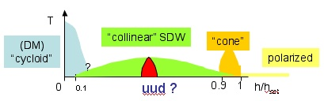
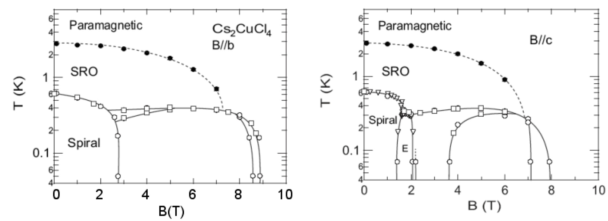

Cs2CuCl4 in magnetic field
Spatially anisotropic triangular lattice antiferromagnet in magnetic field: sequence of
quantum phase transitions. Ordering in spatially anisotropic triangular antiferromagnets ,
O.A. Starykh and L. Balents, Phys. Rev. Lett. 98 , 077205 (2007).

Experimental phase diagram of Cs2CuCl4 with magnetic field along
crystalloraphic b and c axes. Dzyaloshinskii-Moriya interaction is clearly
important. From Tokiwa et al, Phys. Rev. B 73, 134414 (2006):
